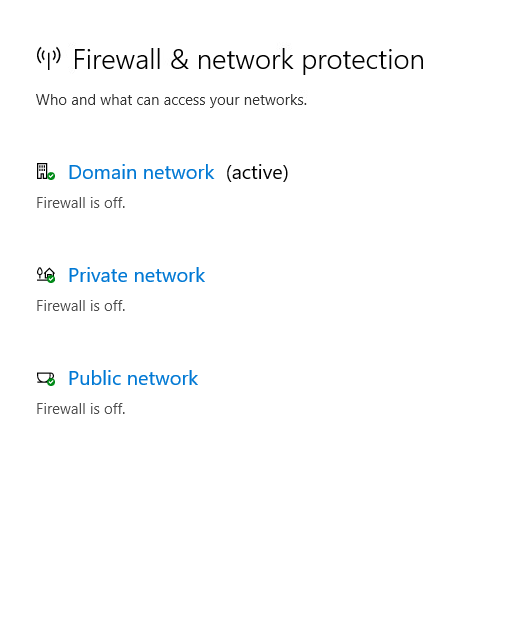
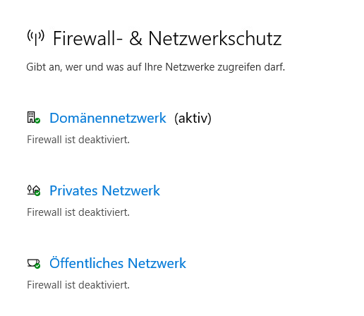
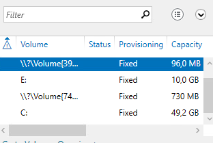
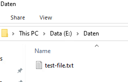
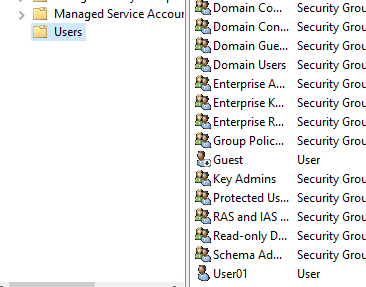

- Ich habe erfolgreich einen Windowsserver mit Windows Server 2025 Standard mit GUI erstellt und eine Domäne mit dem Namen leers.local hinzugefügt.
- Ich habe außerdem die Systemsprache auf Englisch geändert.
- Ich habe den Server auf den Namen ServerDC10 umbenannt.
- Ich habe bei der Erstellung des Domänencontrollers darauf geachtet, dass ich die Vorschriften: [Insg. Speicher: 60 GB, 2 CPUs & 8 GB Ram] beachte.
- Ich habe einen Windows 10 Enterprise Workstation Client als Mitglied der Domäne leers.local hinzugefügt und den Client zu Member10 umbenannt.
- Ich habe darauf geachtet, dass die Systemsprache auf Englisch eingestellt ist.
- Ich habe mich an die Vorschriften [40 GB, 1 CPU & 8 GB Ram] gehalten.
- Ich habe die Firewall für alle Systeme [Member10, ServerDC10] abgeschaltet.
Bild von Firewall-Settings - ServerDC10:

Bild von Firewall-Settings - Member10:

- Ich habe eine zusätzliche Datenpartition mit einer Größe von 10 GB. Der Kürzel der Partition lautet E
Bild von Partitionen (Volumes) - ServerDC10:

- Ich habe in der Partition einen neuen Ordner namnes Daten hinzugefügt.
- Danach habe ich im Active Directoryy den Benutzer User1 hinzugefügt
- Anschließend habe ich den Ordner Daten auf Member10 als Netzwerklaufwerk X verknüpft.
- Test: ich habe über das Laufwerk X eine Datei mit Testinhalt erstellt und sie wurde erfolgreich syncronisiert.

- Hier ein Bild von User01

Außerdem habe ich Daten als Laufwerk X auf Member10 verbunden.
- Eine Domäne ist eine Netzwerk, womit man verschiedene Sachen verwalten kann:
Darunter sind: Benutzer, Computer, Berechtigungen, Gruppenrichtlinien.
Ein Domänencontroller ist ein Server, der eine Domäne verwaltet, welche, wie schon gesagt die Benutzer, Computer, usw. steuert.
Eine Partition ist ein abgetrennter Teil im Speicher / virtuellem Speicher.
Diese werden auf Windows mit verschiedenen Kürzeln abegekürzt.
Es gibt denoch einen Unterschied zwischen Partition und Datenpartition:
Datenpartitionen werden speziell zum speichern von Daten verwendet.
Ich habe in den Aufgaben die Datenpartition: Daten erstellt.
Eine Netzwerkfreigabe ist eine Freige, womit andere Clients im gleichen Netzwerk (und wenn sie freigegeben ist für den Client) auf einen bestimmten Speicher zugreifen können.
Diese Berechtigungen bestimmen, was der Benutzer mit Datein und/oder Ordnern machen darf.
DNS (domain name system) übersetzt Namen in IP-Adressen.
Die Vorteile sind:
zentrale Benutzerverwaltung
zentrale Berechtigungen
bessere Verwaltung
Eine Gruppenrichtlinie (abgekürzt gpo) ist dazu in der Lage, Einstellungen zentral zu verwalten.
Unter anderem Firewall Einstellungen, Sicherheits Einstellungen, usw.